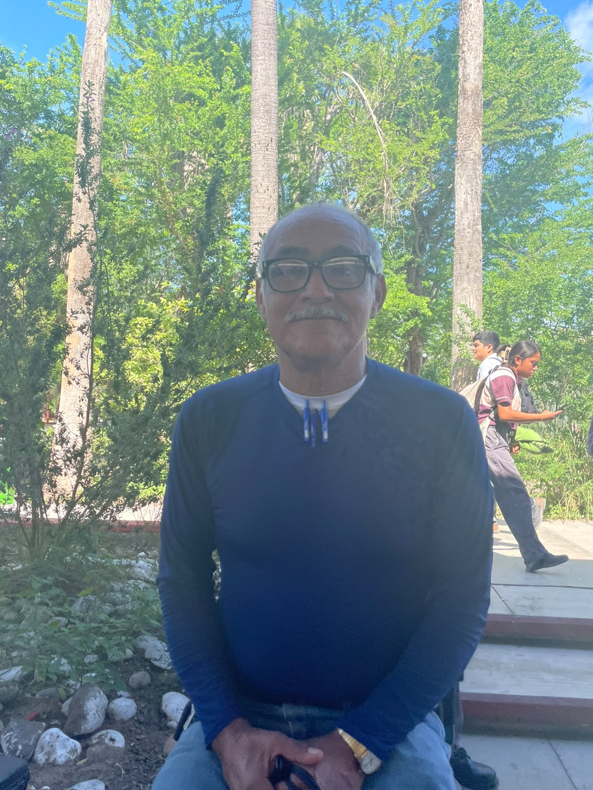
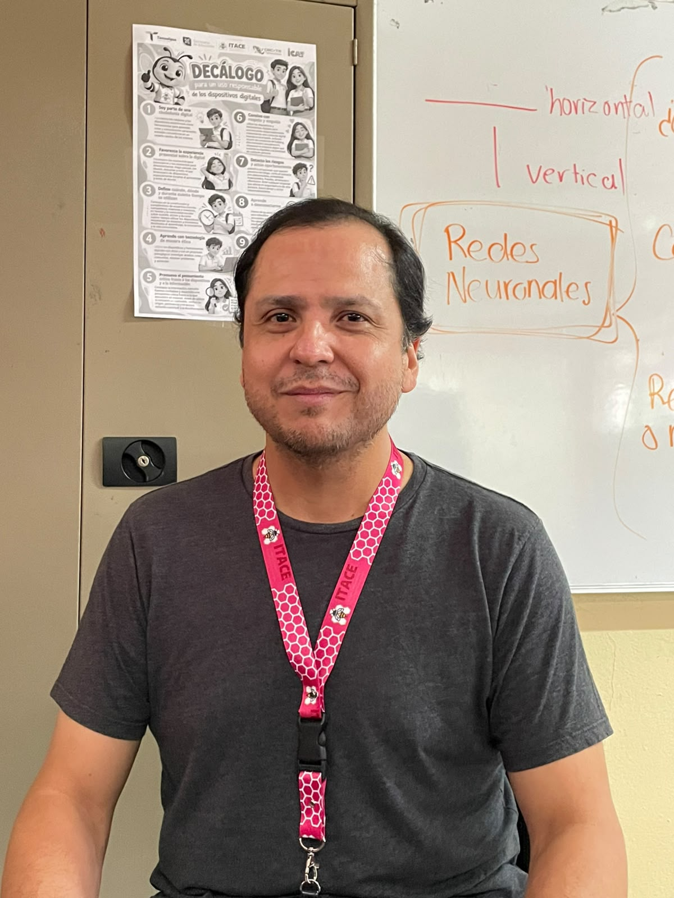
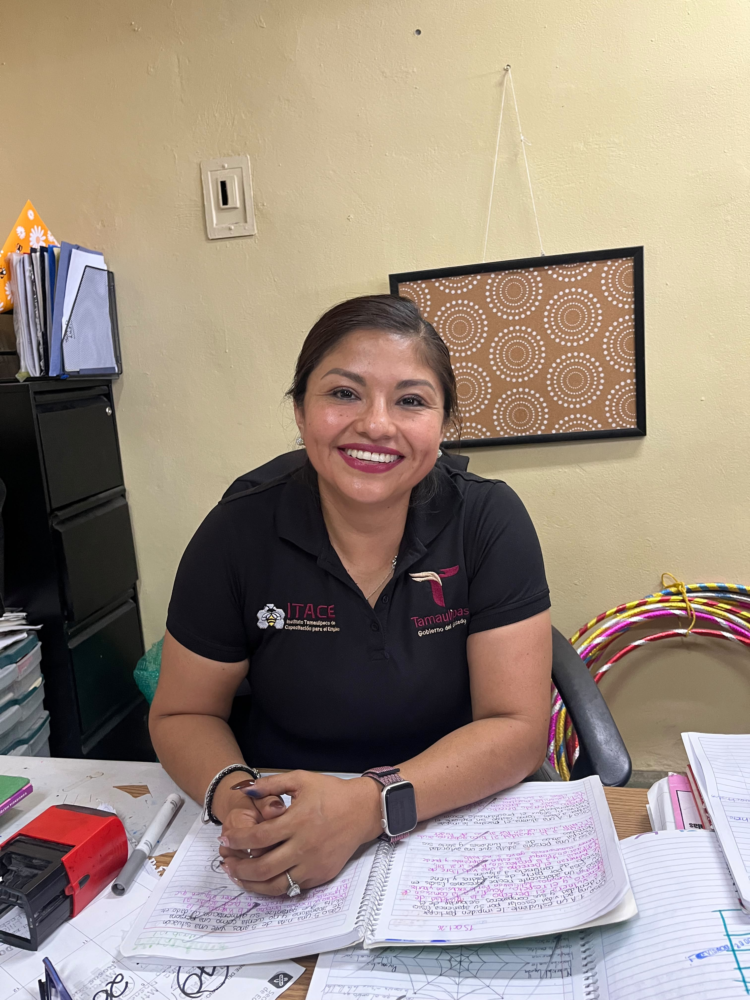
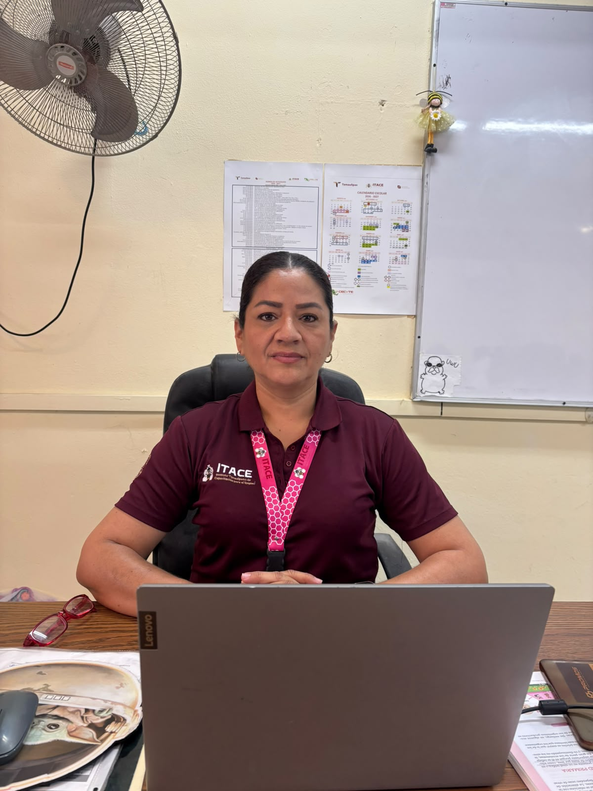
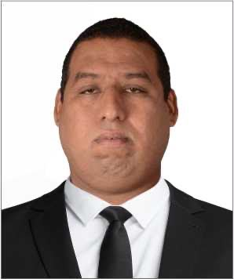
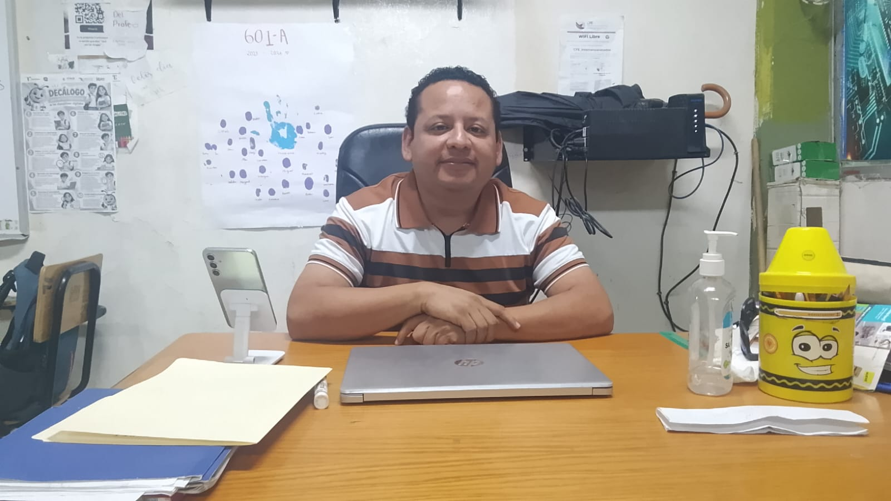

Estructura de la Ficha Informativa:

Isidro de Leon Flores
Salón: Mayormente afuera
Materias que imparte: Educacion Fisica Premilitar
Semestres correspondientes: Todos los semestres
Breve perfil profesional: Lic en Psicopedagogia y lic en Pedagogia
Años en el ITACE: 29

Walter Alan Barrera Cerda
Salón: A2
Materias que imparte: Ingles 3 y Club de Rondalla
Semestres correspondientes: 1ro 2do 3ro
Breve perfil profesional: Ing Industrial y Administracion
Años en el ITACE: 13
Luis Enrique Lerma Martinez
Salón: B2
Materias que imparte: Lengua y Comunicacion, Sociemocionales, Conciencia Historica
Semestres correspondientes: 1ro, 2do y 3ro
Breve perfil profesional: Lic en Pedagogia, Ing Petrolero, Diplomado en competencias Docentes
Años en el ITACE: 33
Gerardo de la Rosa Ortega
Salón: A4
Materias que imparte: Ingles
Semestres correspondientes: 5to
Breve perfil profesional: Licenciado en Contaduria
Años en el ITACE: Inf no Autorizada

Erika Aide Perez Abrego
Salón: A1
Materias que imparte: Ciencias Naturales, Humanidades
Semestres correspondientes: 3ro y 5to
Breve perfil profesional: Ing Industrial en Sistemas, Maestria en Educacion
Años en el ITACE: Info no Autorizada
Samuel Gonzales de la Fuente
Salón: C7
Materias que imparte: Pensamiento Filosofico, Ciencias Sociales, Estudios Listerarios
Semestres correspondientes: 1ro, 3ro
Breve perfil profesional: Lic en Administracion de Empresas, Carrera Tecnica de Ebanisteria
Materias que imparte: Pensamiento Filosofico
Años en el ITACE: Info no Autorizada
Norma Elena Torres Quiñones
Salón: C4
Materias que imparte: Ciencias Naturales
Semestres correspondientes: 1ro 3ro 5to
Breve perfil profesional: Ing Quimico, Maestro en Docencia
Años en el ITACE: 26
Benjamin Limon Martinez
Salón: Laboratorio 5
Materias que imparte: Informatica, Mod. Programacion e Inteligencia Artificial, Cultura Digital
Semestres correspondientes: 1ro 3ro 5to
Breve perfil profesional: Administracion en Productividad y Calidad, Maestria en Educacion
Años en el ITACE: 5

Karla Valeria Moran Lerma
Salón: B3
Materias que imparte: Pensamiento Filosofico, Ciencias Sociales, Cultura Digital
Semestres correspondientes: 1ro, 3ro
Breve perfil profesional: Maestria en Educaciom
Años en el ITACE: 33

Liliana Rosas Pacheco
Salón: A8
Materias que imparte: Humanidades, Pensamiento Filosofico, Conciencia Historica, Lengua y Comunicacion, Formacion Sociemocional
Semestres correspondientes: 1ro, 5to
Breve perfil profesional: Lic en Pedagogia, Mestria en Educacion Media Superior y Doctorado en Educacion
Años en el ITACE: 5

Sandra Catalina Silva Camacho
Salón: B4
Materias que imparte: Comunicacion
Semestres correspondientes: 1ro, 3ro, 5to
Breve perfil profesional: Mestria en Metodologia de la Enseñanza
Años en el ITACE: 25

Grecia Avalos Ramos
Salón: B1
Materias que imparte: Lengua y Comunicacion
Semestres correspondientes: 1r, 3ro
Breve perfil profesional: Lic en Maestria
Años en el ITACE: 3
Carlos Malecio Carmona Olivares
Salón: C5 y L2
Materias que imparte: Mod. en Diseño Grafico, Ingles
Semestres correspondientes: 1r, 3ro
Breve perfil profesional: Ing en Sistemas, Doctorado en Maestria en Educacion Basica
Años en el ITACE: 2

Bertha Alicia Zapata Aldape
Salón: C6
Materias que imparte: Matematicas
Semestres correspondientes: 1r, 3ro
Breve perfil profesional: Doctorado en Educacion
Años en el ITACE: 2

Laura Esmeralda Heredia Blanco
Salón: A7
Materias que imparte: Ciencias Naturales
Semestres correspondientes: 1ro, 3ro, 5to
Breve perfil profesional: Biologa, Especializada en Fisica y Quimica
Años en el ITACE: Inf. no Autorizada
Felipe Hernandez Gonzales
Salón: Inf. no disponible
Materias que imparte: Electronica y Semiconductores, Lengua y Comuniacion, Conciencia Historica
Semestres correspondientes: 3ro, 5to
Breve perfil profesional: Ing en Electronica
Años en el ITACE: Inf. no Autorizada
Yuridia Lizbeth Cepeda Ramos
Salón: A5
Materias que imparte: Matematicas, Ingles
Semestres correspondientes: 1ro, 3ro, 5to
Breve perfil profesional: Maestria en Educacion e Innovacion Educativa, Doctorado en Educacion
Años en el ITACE: Inf. no Autorizada

Juan Pablo Torres Adame
Salón: Inf. no Disponible
Materias que imparte: Programacion, Cultura Digital, Club Robotica
Semestres correspondientes: 1r, 3ro, 5to
Breve perfil profesional: Lic en Informacion Administrativa y Maestria en Ciencias de la Enseñanza
Años en el ITACE: 1
Romualdo Guadalupe de la Cruz
Salón: Inf. no Disponible
Materias que imparte: Pensamiento Matematico
Semestres correspondientes: 1ro, 3ro
Breve perfil profesional: Ing. Mantenimiento Industrial e Industrias Petroleras
Años en el ITACE: Inf. no Autorizada

Ulises Solis Rieboles
Salón: Inf. no Disponible
Materias que imparte: Ciencias Naturales
Semestres correspondientes: 1ro, 3ro, 5to
Breve perfil profesional: Biologo, Maestria en Analisis Clinicos, Doctorado en Educacion
Años en el ITACE: Inf, no Autorizada
Trinidad Hernandez Barrera
Salón: C7
Materias que imparte: Ciencias Naturales
Semestres correspondientes: 1r, 3ro
Breve perfil profesional: Biologo
Años en el ITACE: Inf. no Autorizada

Erick Ramirez Solis
Salón: Inf. no Disponible
Materias que imparte: Pensamiento Matematico
Semestres correspondientes: 1r, 3ro, 5to
Breve perfil profesional: Lic. Electromecanica, Maestria en Educacion
Años en el ITACE: Inf. no Autorizada
Mildred Yasmin Reyes Norberto
Salón: C1
Materias que imparte: Temas Selectos Matematicos
Semestres correspondientes: 5to
Breve perfil profesional: Ing Quimica, Maestria en Docencia
Años en el ITACE: Inf. no Autorizada